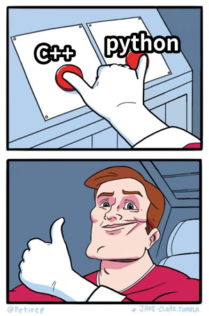

编程语言的使用
语言只是工具，能解决问题的工具就是好工具
概述
- Q1 shell的使用
- Q2 C->C++->python
- Q3 什么时候用什么语言

1：shell的使用？
为什么要先说shell?
shell 是早些年代（当然现在也用 的一款语言，
它会从


当然为了解shell的历史，还是得看看bash
也许是更好的文档(但全英文)
- 命令行输入
man sh
- 使用sh意味着我们无时无刻不在编程(
# ex1:我想知道某个程序运行的时间?
time <那个程序>
# ex2:我想关机?
poweroff
# 我还想...
shell的调用控制和运算
-
调用 ：使用存在的部分- 变量
- 函数
- 可执行文件：通常为二进制文件（ELF）或脚本
-
控制 ：主要包括循环和选择 -
运算 ：shell中最智能的地方，主要在运算符方面
这三者构成了shell这门语言最基本的部分
shell的调用
主要讲一下
-
调用 -
直接执行的命令
shell会在PATH路径下一个一个找过去，也就是说几乎所有的命令都可以在PATH下找到， 也可以把自己编译得到的命令放到某个PATH下。 -
指定路径执行的命令
shell会在PATH路径下一个一个找过去，也就是说几乎所有的命令都可以在PATH下找到， shell也可以通过在二进制文件或脚本的绝对路径或相对路径前加.来执行该文件命令
-
ps：cd命令是对系统调用的封装，不是PATH下的二进制文件
shell的调用例子
# 查看所有的PATH
echo $PATH
# 查看ls命令所在位置
which ls
# 执行某个可执行文件
./<可执行文件路径>
#变量 ps：等于号前后不能为空格
STR="Hello World"
# 函数
sayHello(){echo "$STR"}; sayHello;
PATH其实是shell的变量
shell的运算
shell 的运算很独特，除了加减乘除且或等
还有一类比较独特的符号---
| 符号 | 功能 |
|---|---|
| > | 将命令输出写入到文件或设备（例如打印机）中，而不是写在命令提示符窗口中。 |
| < | 从文件中而不是从键盘中读入命令输入。 |
| >> | 将命令输出添加到文件末尾而不删除文件中的信息。 |
| >& | 将一个句柄的输出写入到另一个句柄的输入中。 |
| <& | 从一个句柄读取输入并将其写入到另一个句柄输出中。 |
| | | 从一个命令中读取输出并将其写入另一个命令的输入中。也称作管道。 |
shell的运算例子
# 把当前目录下的内容写入 tmp.txt文件
tree > tmp.txt
# 等同于cat tmp.txt
cat < tmp.txt
# 在tmp.txt追加日期
date >> tmp.txt
# 在tmp.txt追加日期
date >> tmp.txt
# 查看当前目录下的cpp文件
ls | grep *.cpp
通过复合使用这些符号，利用
简单 的工具完成复杂 的任务
更现代的shell命令
- 试试fish
fish
fish_config
然后自己玩
- 也许不只是shell
# 类似shell的方式使用python3
python3
# 对python而言。也许就像fish一样，有更好的交互方式。
# 安装ipython （少不了清华源）
pip3 install ipython -i https://pypi.tuna.tsinghua.edu.cn/simple
ipython
也许ipython可以让你重新认识python
2：C->C++->python

C语言适合做什么?
接近底层的低抽象程序设计。
个人观点：用C语言写数学题完全是
C语言做底层封装更合适，比如
封装计算 内存分配器 线程池
简单来说，C语言的模型接近状态机，是控制状态的过程。
C++适合做什么?
高性能计算和高抽象设计
C++ 的抽象能力很强，有多种编程范式，面向对象，元编程，函数式编程。
- 最常用的面向对象，模型接近
行为树 。 - 元编程，即---编写
生成代码的代码 。 - 函数式编程，一切抽象为
表达式求值 。
C++适合设计，但它最大的毛病也在于此，限制太少，
容易写出满是bug的代码，所以不适合新手。
ps:已经会C语言就不是新手了
C++，噩梦的开始
也许C++没有那么难
C++ 很难学这个概念，似乎在人们心中根深蒂固，但真的是这样吗？
回到前面的C语言，C语言的排序很复杂， 正常人不会想用那种api
- 排序 点击查看
# s是stl容器
std::sort(s.begin(), s.end());
# customLess 自定义的比较方式
std::sort(s.begin(), s.end(), customLess);
比C清爽很多，不是吗？C++
并没有想象中那么难
C++很复杂，但并非困难
- 零开销原则 点击查看
所以你
几乎不用担心 ，C++那么复杂，学不完怎么办
# 一切不过是对底层的抽象和封装
std::cout << "Hello World\n";
那么，C++作为高性能的代表，至今仍有一个问题困扰各C++程序员
包管理
提到包管理，那一定绕不开
python适合做什么?
简单小巧的任务
比如计算。
> ipython
In [1]: from sympy import *
In [2]: x = symbols("x")
In [3]: y = (5**5)*atan(x)
In [4]: y
Out[4]: 3125*atan(x)
In [5]: y.diff()
Out[5]: 3125/(x**2 + 1)
In [6]: y.integrate()
Out[6]: 3125*x*atan(x) - 3125*log(x**2 + 1)/2
python的包管理
pip3 install xxx
简单友好 的工具总是受到大家的青睐
python很适合做些小东西，同样地
比C++简单的api背后，是海量的代码在支持（但并非官方提供的）
所以各行各业都比较喜欢使用python来开发
但python也有很难绕开的毛病：
所以python虽然在某些时候很好用，但偶尔
程序员宁愿自己用C++实现相同的功能，也不愿使用python
大材小用地讲，python
3：什么时候用什么语言
不要有语言歧视，每种语言都有适合自己的领域

C++可以应付大部分场景
- 但是如果涉及较多系统调用我会先考虑C语言
- 如果要做稍微复杂一点的计算，我会考虑python
- 如果要日常使用的命令我会选择shell（当然这个也算不得选择
接下来来点干货（推荐

-
shell
-
c++
-
python
最后希望大家使用更现代的工具，更好地编程（解决问题）